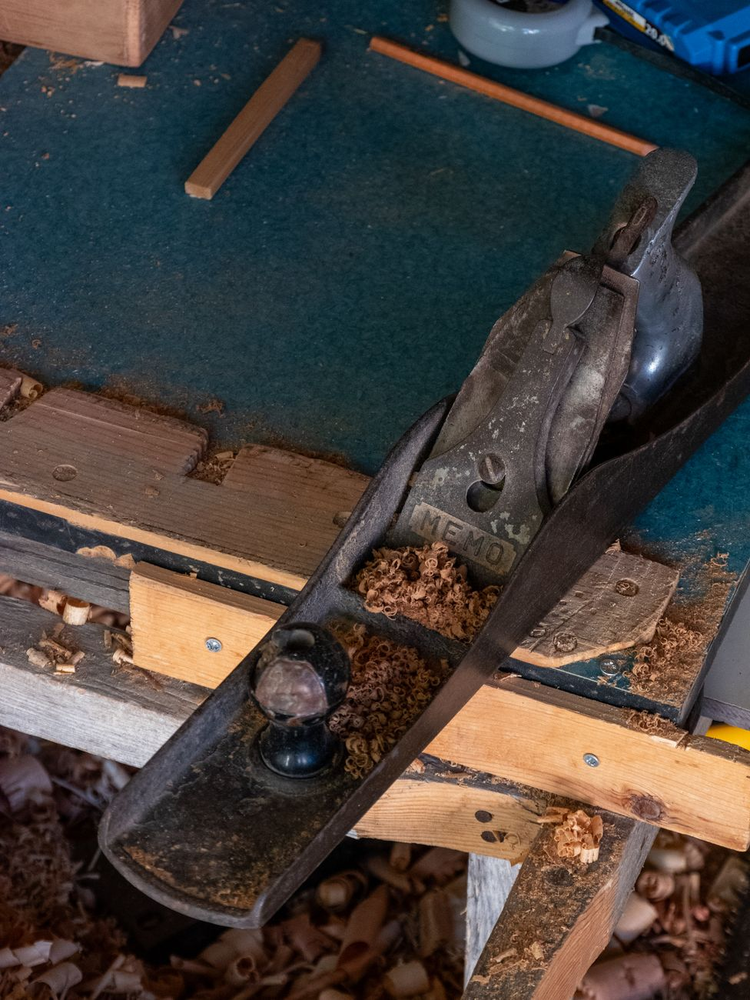
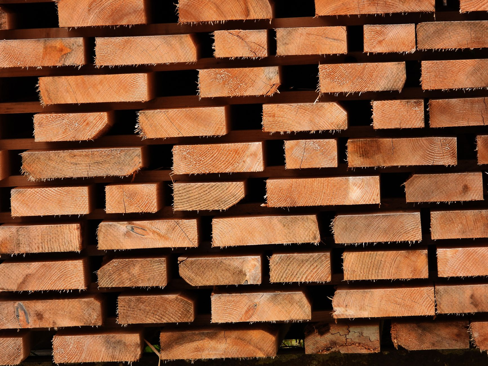

Commissions & Process
Custom hardwood furniture, built one commission at a time. This page explains how a job runs from first measure to delivery, what it costs, how long it takes, and what we need from you along the way. Read it before you write to us and your enquiry will be a short one.

What we build, and what we decline
We build solid hardwood furniture joined with mortise and tenon, dovetail, and drawbored frames. Tables, desks, beds, benches, sideboards, casework, bookcases, window seats and built-in cabinetry in solid stock with solid or shop-sawn veneered panels where a wide field is needed.
We turn down more work than we take, and it saves everybody time to say which:
-
No veneer carcass work
We don't build in MDF or ply-core veneer, and we don't repair it. If a piece is specified as a veneered box with an applied edge, another shop will do it better and cheaper than we will.
-
No flat-pack or knock-down
Our joints are glued and wedged. Nothing we make comes apart with a hex key. If a piece has to fit up a stair that it cannot be carried up assembled, we design it as a sectional case with bolted frames, and we say so at drawing stage.
-
No on-site refinishing
We don't sand or re-oil existing furniture in your home. Finishing happens in the shop, under dust control, with cure time. Repairs to our own work come back to Kingston.
-
No reproduction of another maker's design
Bring us a reference photo as a starting point and we'll talk about proportion and joinery. Bring us a catalogue page and ask for a copy and we'll point you back at the catalogue.
The six stages
Every commission runs through the same six stages in the same order. Nothing is skipped, and no board is cut before stage four is paid.

-
1. Site measure
We come to the room with a tape, a laser and a level. We record wall lengths at three heights, floor fall, outlet and radiator positions, door swings, and the tightest point of the delivery path — stair width, landing turn, elevator car depth. Site measure is $250 within 60 miles of Kingston, $400 in the five boroughs, and it is credited against the deposit if the job proceeds. For a freestanding table or bench we can work from your dimensions and photographs instead, at no charge.
-
2. Drawings
You get a plan, two elevations and at least one full-size joinery section, plus a written specification listing species, finish, hardware and overall dimensions to the eighth of an inch. Two rounds of revision are included. Drawings take ten to fourteen days from the measure.
-
3. Timber selection
Once the drawing is approved we pull boards. For tables and anything with a visible top, you're welcome to come to the shop and lay out the boards yourself — most clients do, and it takes about an hour. If you can't travel, we photograph the layout wet with mineral spirits and send it for approval.
-
4. Deposit
Fifty per cent of the quoted total, due on signed drawings. This buys the timber and books your slot in the build calendar. Your start date is set at this point, not before.
-
5. Build
Stock is milled oversize, stickered in the shop for a week to settle, then milled to final dimension. Joinery is cut, the piece is dry-fitted, then glued, levelled and finished. We send three or four progress photographs over the course of the build — at dry fit, after glue-up and at first coat. We don't send daily updates, and we'd rather you didn't ask for them.
-
6. Delivery and install
Balance is due on completion, before the truck is loaded. We deliver and place everything ourselves in the Hudson Valley and New York City — blanket-wrapped, no third-party freight. Built-in work is scribed and fixed on site; allow a half day for a bookcase wall, a full day for a kitchen run. Beyond 150 miles we crate and ship, and delivery is quoted separately.
Timber library
We keep five species in stock, kiln-dried to 6–8% and stickered in the shop for at least four months before use. Everything is domestic and bought as whole logs or packs from three mills in New York and Pennsylvania. Other species — hickory, sycamore, elm, butternut — we can source, but they add four to eight weeks.

-
White oak
Hard, heavy, 1360 on the Janka scale. Quartersawn it shows ray fleck and moves about half as much across the width as flatsawn does. The most stable thing we work and the first choice for wide tabletops, door frames and anything in a room with big seasonal humidity swings. Takes a fumed or soap finish well. Goes grey-brown in sunlight rather than golden.
-
Black walnut
Mid-weight, 1010 Janka, dimensionally calm and easy to plane clean. Colour runs from chocolate heartwood to pale sapwood and we'll ask whether you want sap excluded, which costs more because the yield drops. Walnut lightens with age — it does not darken. Best for dining tables, desks and casework where you want the grain to be the event.
-
Cherry
Softer at 950 Janka, so it dents, and we say so plainly before anyone orders a kitchen table in it. In exchange it darkens from pink-tan to deep russet over about two years and keeps going quietly after that. Beautiful for bedroom casework, chairs and anything that lives out of direct, uneven sun — patchy light means patchy colour.
-
Ash
1320 Janka, springy, open-grained, strong in thin sections. It's what we use for chair and stool parts, bed rails and bench legs. Pale, almost white when finished with a hardwax oil. Moves a little more than oak, so we avoid it for very wide unsupported panels.
-
Hard maple
1450 Janka and the densest of the five. Nearly closed grain, pale, and it shows every scratch and every drip of finish, so surface prep takes longer and the piece costs more. Right for worktops, cutting surfaces, drawer sides and anywhere a light, quiet surface is wanted. Curly and birdseye figure available at a premium, by the board.
-
A word on movement
Solid wood changes width with the seasons. A 36-inch flatsawn oak top will move roughly a quarter inch between a humid August and a dry February. We design for it — breadboard ends with elongated pins, buttoned tops, floating panels — and we'll explain where that movement will show on your piece before you approve the drawing.
Pricing
We quote a fixed price from approved drawings, not an hourly rate. The number does not move after you sign unless you change the brief in writing. Payment is 50% deposit on signed drawings and 50% on completion, before delivery. We take check or bank transfer; card payments carry a 3% surcharge.
- Dining table, 6–8 seat, solid top
- $5,400 – $11,000
- Desk or writing table
- $3,200 – $7,500
- Sideboard or credenza
- $6,000 – $14,000
- Bed frame, queen or king
- $4,200 – $9,000
- Bookcase wall, built in, per linear foot
- $900 – $1,600
- Bench or hall seat
- $1,400 – $3,600
What moves the number
Four things, mostly. Species and yield: a walnut top with no sapwood can cost twice a white oak top of the same size, because we buy three boards to get two. Drawer and door count: each hand-cut dovetailed drawer is roughly four to six hours of bench time, and a fitted drawer in a case that is not square is longer. Width: anything over 38 inches needs wider stock, more careful layout and more clamping. Site conditions: plaster walls that are out of plumb by an inch over eight feet turn a one-day install into two.
Things that do not change the number: design revisions inside the two included rounds, our travel within 60 miles of Kingston, and finish choice among our three standard finishes — hardwax oil, oil and wax, or shellac and wax. Sprayed conversion varnish, where a job really needs it, is quoted as an extra.
Lead times and the booking window
There are two of us and one bench shop. We run three to four commissions at a time and we don't take more in order to shorten the queue, because that's how the queue gets longer.
- Now booking
- Builds starting September 2026
- Enquiry to drawings
- 3–4 weeks
- Build, freestanding piece
- 6–10 weeks
- Build, built-in cabinetry
- 10–16 weeks
- Typical total, signed drawings to install
- 5–8 months
- Shop closed
- Dec 22 – Jan 5
Two slots a year are held for work that has to move faster — a closing date, a sale, a flood. That carries a 20% rush charge and we'll tell you honestly whether the piece can be done well in the time. Often it can't, and we'll say so.
Drawings and approvals
Before a board is cut you sign off on one document. It runs to three or four pages and contains:
-
Dimensions
Overall height, width and depth to the eighth of an inch, plus apron height, knee clearance, shelf pitch and drawer opening sizes. If a chair has to tuck under, the number that matters is on the drawing.
-
Joinery sections
At least one full-size section through the primary joint, so you can see what is holding the piece together. On casework, a section through the carcass and the drawer runner.
-
Species and finish
Named species for every part, including secondary timber for drawer boxes and backs, and the specific finish with its sheen. A sample board in your species and finish comes with the drawing.
-
Hardware
Make and model of every hinge, slide, catch and pull, with the finish specified. If you want to supply your own pulls, they need to be in our hands before the build starts.
-
Delivery path
The measured tight point, and the statement that the piece will pass it. This is the single most common cause of trouble in custom furniture and we put it in writing.
-
Date and price
Build start date, estimated completion window and the fixed price. Changes after signature are priced and dated as a written amendment before we act on them.
They sent a full-size drawing of the tenon. I'd specified furniture for fifteen years and no one had ever shown me the joint before I approved the piece. Three of my clients have tables from them now.
Rebecca Ozaki, interior designer, Rhinebeck
Care, repair and the joinery guarantee
Our joints are guaranteed for as long as we are in business. If a mortise and tenon, a dovetail or a frame we cut comes loose or fails in normal domestic use, we repair it at no charge, including collection and return within 150 miles of Kingston. That guarantee transfers with the piece if you sell it or pass it on.
What the guarantee does not cover: finish wear, dents, water rings, heat marks, sun bleaching, and damage from moving the piece yourself. Those are all repairable, and we repair our own work at $95 an hour plus materials. A tabletop can be stripped, re-levelled and re-oiled in the shop for most pieces in the $400–$900 range, and it comes back looking new.
Looking after it
Keep the room between 35 and 55 per cent relative humidity if you can; a cheap hygrometer and a humidifier in January do more for solid furniture than any product. Wipe spills rather than letting them stand. Use coasters under anything hot or wet. Re-coat a hardwax oil top once a year for the first two years and then every two or three years after that — one thin coat, wiped on, wiped off, dry overnight. We send a small bottle of the exact finish with every piece and sell refills at the shop.
Don't use silicone polish, don't use anything described as "restorer", and don't drag a piece across a floor by its top.
Start a commission
Tell us the room, the piece and roughly when you'd want it. A sentence about what the piece has to do is more useful than a mood board. We reply to every enquiry within three working days, and if we're not the right shop for the job we'll say so and suggest someone who is.
Or call the shop on (845) 555-0162, Tuesday to Saturday, 8am to 4pm. Visits to 41 Cornell Street are by appointment — it's a working shop and the bandsaw is loud.